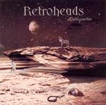

| Artist: | Retroheads |
| Title: | Retrospective |
| Label: | Unicorn Records UNCR5017 |
| Length(s): | 67 minutes |
| Year(s) of release: | 2004 |
| Month of review: | [02/2005] |
| 1) | Earthsong | 10.45 |
| 2) | Man | 5.14 |
| 3) | Judgment Day | 9.16 |
| 4) | Dreams | 6.09 |
| 5) | World Reveal | 8.49 |
| 6) | Starry Night | 6.05 |
| 7) | Urban Flight Delight | 6.53 |
| 8) | Taking My Time | 8.26 |
| 9) | The Fool | 5.23 |
Man starts out guitar vocal, reminiscent of Tull. Half way through, though, it picks up with some guitar and almost modern sounding synths, giving the track a bit more aplomb.
Judgment Day swings a bit more, reminding a little of Kula Shaker initially, but starting with Ann-Kristin's vocal section we move into other territory. At first somewhat doubtful but then the guitar starts building slowly, on a basis of synths and rhythm, towards a climax.
Dreams blends styles: Ann-Kristin's vocals are a bit high and very sweet, maybe a bit Manhattan Transfer. Meanwhile Tore's vocals are more straightforward, sort of Andy Latimer, or Richard Sinclair, with that twist of irony, while the guitar has its way. This moves into an intermediate section with nicely wavering synths. Lazily the theme returns. This track, as does the previous, has some similarities with Symphonic Slam, in the sense that they not only use progressive elements, but also blend in some soft soul. World Reveal moves even further in this direction, somewhat akin to the soft jazz of Shakatak at times, almost. As the track progresses, the Genesis synths blend back in again, sweeping Shakatak off stage.
Starry Night has a gentle basis, featuring both vocalists gentle strumming and background synths. After a couple of minutes these move aside for a synth and guitar duel that remains melodic. Especially the synth sounds very sweet, drawing the listener in, mesmerizing. This combination of synth, boxed choir and melody make for the high point of the album.
Urban Flight Delight returns the Klaatu ghost, mostly in the light synths and vocals. The onset of the guitars brings a new signature, shooing Klaatu and adding complexity taking us through to the finale, squishing in some jazzy bits on the way too.
Taking My Time makes Roine Stolt pop up in front of me, all of a sudden. This doesn't last too long, though. The track does however keep a sort of laidbackity (make m up as we go along), uneventfullness we find so often with Flower Kings or Fruitcake.
The Fool sounds very much like a mid to late seventies instrumental by Genesis, although the guitar later on sounds a bit sharper than that.
retroheads.com